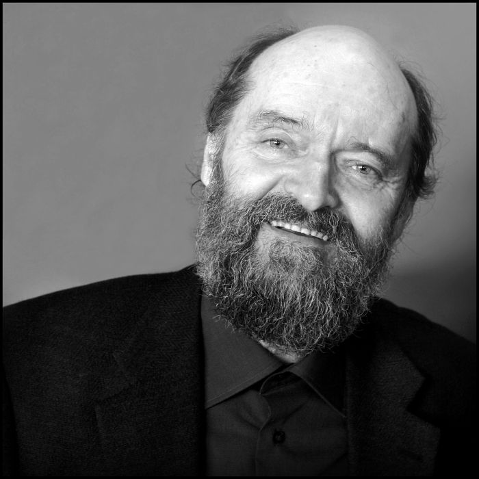

Arvo Pärt (Estonian pronunciation: [ˈɑrvo ˈpært]; born 11 September 1935) is an
Estonian composer of classical and sacred music. Since the late 1970s, Pärt has worked in a minimalist style that employs
his self-invented compositional technique, tintinnabuli. His music is, in part, inspired by Gregorian chant.